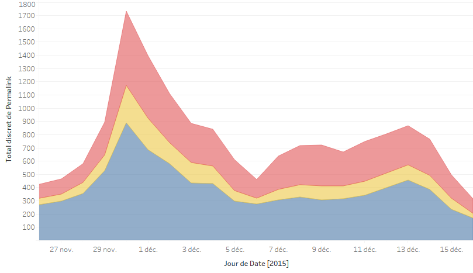
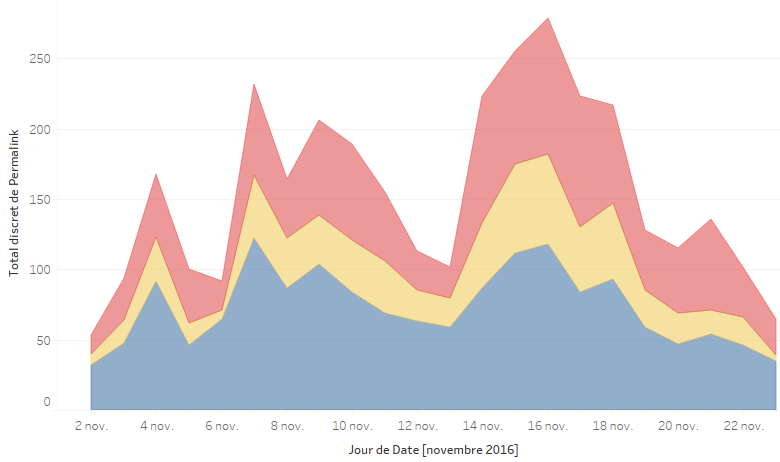

L'évolution du sujet

Deux corpus composent notre problématique : un premier corpus associé à la COP21 et un second corpus associé à la COP22. Nous avons souhaité nous intéresser à la blogosphère française pour la raison suivante : le nombre de publications en français, COP21 et COP22 également, est supérieur à celui des autres langues. La blogosphère française est donc prépondérante dans la production d’articles de blog. Il est intéressant de se pencher sur ce terrain.
Premier Corpus
Le nombre de publications blog, toutes langues confondues, est de 22 150 pour la COP21. Radarly comptabilise 9365 publications françaises durant l’événement.
Second Corpus
Le nombre de publications blog, toutes langues confondues, est de 5048 pour la COP22. Radarly comptabilise 1660 publications françaises durant l’événement.
La problématique de départ s’est retrouvée confrontée à des obstacles importants: nous n’avions pas d’angle d’attaque par lequel se saisir de notre sujet. Le réseau d’acteurs que nous avons souhaité créé s’est avéré caduque suite à des problèmes méthodologiques liés à Hyphe.
Nous n’avions pas de réseau d’acteurs et les analyses sémantiques réalisées sur les textes des articles présentaient des résultats sommaires et nous avons du mal à distinguer clairement des thématiques.. Il devenait alors important, nécessaire même, de trouver un angle d’attaque pour traiter de la blogosphère.
Nous avons réalisé au départ une visualisation sur CorTexT Manager suite à une extraction lexicale des textes des articles mais la visualisation présentait plusieurs problèmes. Premièrement, dans les mots-clés, toutes les langues étaient confondues, ce qui gênait la lisibilité et la compréhension. Deuxièmement, il n’y avait pas de résultat visible.
Nous avons pris le parti de séparer la base de données en trois corpus à l’aide de query sur Cortext. Un premier corpus sur la langue française, un second sur les articles de la langue anglaise et un dernier sur les articles de la langue espagnole car ces trois langues sont celles qui rassemblent le plus, respectivement, les plus nombreuses publications.

